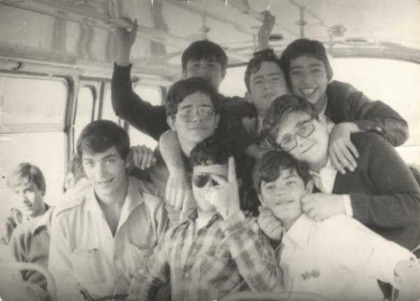

 Es una foto de las Navidades del año 1977 en el autocar que nos llevaba a Santander para coger el tren de vuelta a casa. En ella estamos, empezando por atrás y de izqda a dcha: Montañes (el sonrisas) Vázquez Pinilla y Rafael Torres Pardo Abad. En la siguiente fila estamos Ignacio Román Baldellón “breva” (tenia un corazón tan grande que se le salía del pecho. Nunca le olvidaré. Descanse en paz) y yo a la derecha “dándole papaducas “a Casillas. Sentado, a la izquierda del todo, Romero y delante Juan Barja de Quiroga y Quiñonero (desgraciadamente fallecido. Siempre estará en mi corazón) Manzanera y Casillas. |